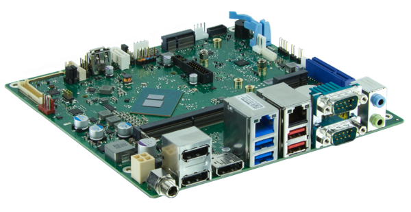
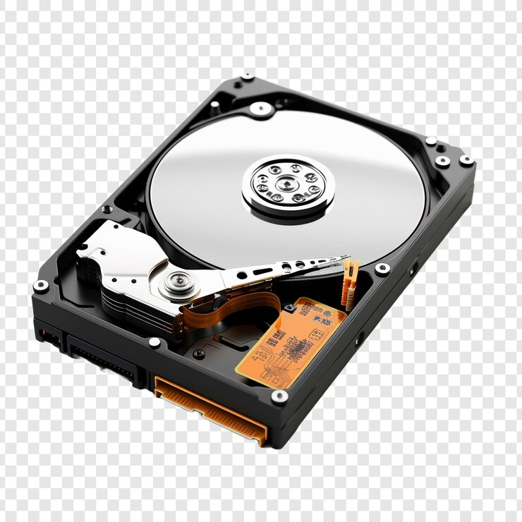

PROCESADORES
El procesador es el cerebro del sistema, justamente procesa todo lo que ocurre en la PC y ejecuta todas las acciones que existen. Cuanto más rápido sea el procesador que tiene una computadora, más rápidamente se ejecutarán las órdenes que se le den a la máquina.

PLACA MADRE
La tarjeta madre es la columna vertebral que une los componentes de la computadora en un mismo punto y les permite comunicarse entre sí. Sin ella, ninguna de las piezas de la computadora, como el CPU, la GPU o el disco duro, podrían interactuar.
DISCO DURO
Un disco duro o disco rígido es un dispositivo de almacenamiento de datos no volátil que emplea un sistema de grabación magnética para almacenar datos digitales de forma rápida y segura. También se le conoce como Hard Disk Drive o por su acrónimo HDD.
MEMORIA RAM
La memoria de acceso aleatorio (RAM) es la memoria de la computadora que almacena la información que un programa necesita mientras se ejecuta.

El procesador es uno de los componentes de la computadora que más ha evolucionado, dado a que se les exige a los ingenieros que cada vez ofrezcan mejores procesadores para que las computadoras funcionen más rápidas y de forma más eficaz. Su evolución no ha sido solo interna, sino que también su forma externa fue modificada..